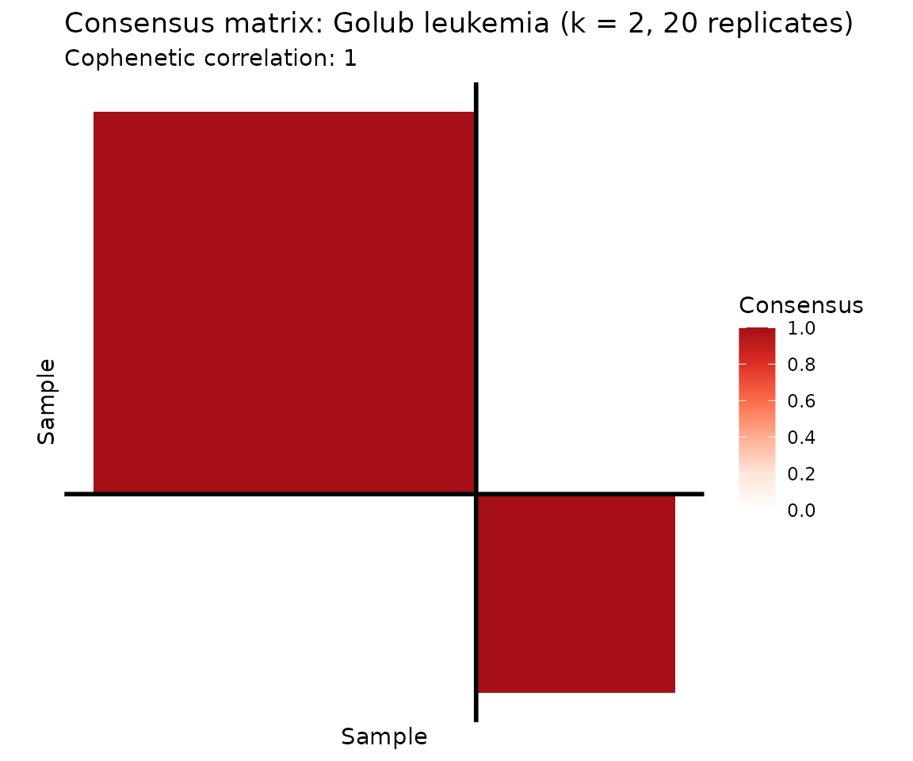
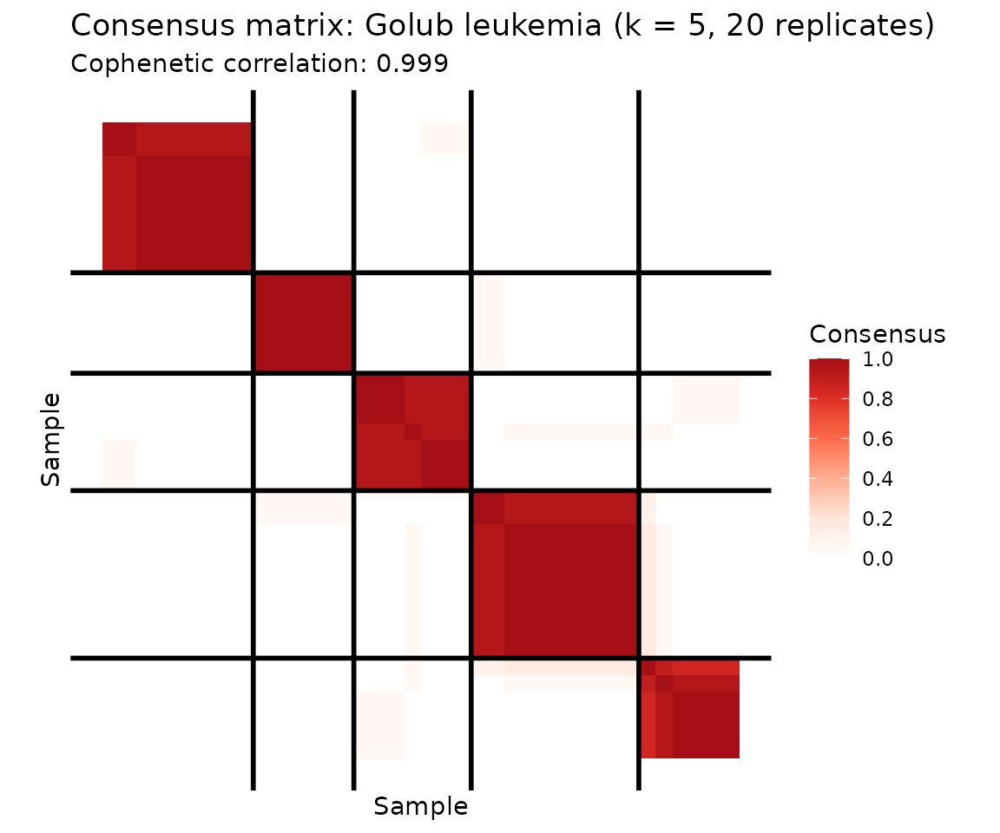
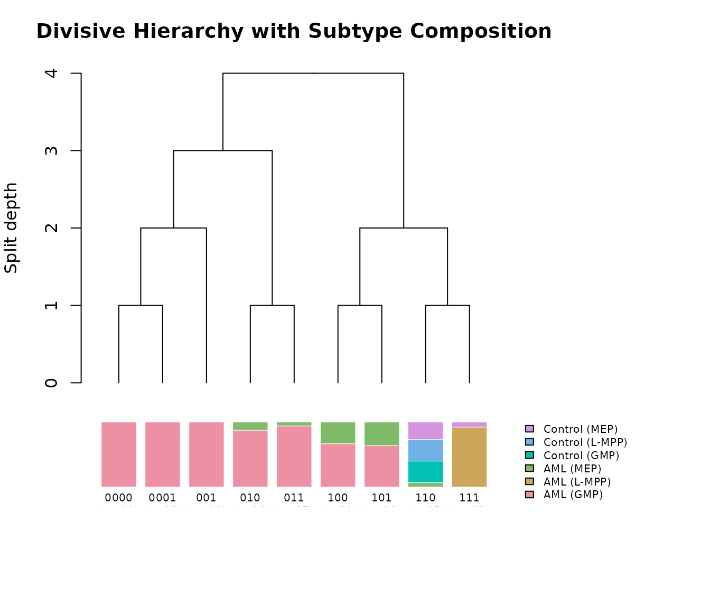
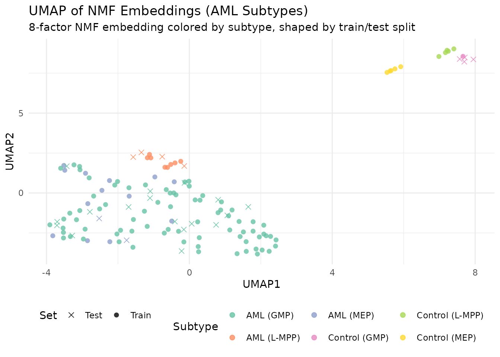

Why NMF for Clustering?
NMF is inherently a soft clustering method. Each column of H gives a sample’s “membership” across k factors, and taking the argmax over rows yields a hard cluster assignment. However, NMF is non-convex — different random initializations produce different solutions and potentially different clusters. Consensus NMF addresses this by running many replicates, tracking which samples consistently co-cluster, and building a robust consensus matrix.
Beyond flat clustering, RcppML provides divisive hierarchical
clustering (dclust) via recursive rank-2 NMF
splits. The core idea is that rank-2 NMF is binary
clustering: each split partitions samples into two groups based
on which of the two factors dominates. dclust applies this
recursively, building a full hierarchy — each node in the tree is a
bipartition() that finds the best binary split.
Classification from embeddings leverages the low-dimensional H
representation for supervised tasks.
API Reference
Consensus NMF
consensus_nmf(data, k, reps = 50, method = c("hard", "knn_jaccard"),
knn = 10, seed = NULL, threads = 0, verbose = FALSE, ...)-
data— input matrix (features × samples) or.spzpath -
k— factorization rank (number of clusters) -
reps— number of NMF replicates (more = more stable; use ≤ 30 for speed) -
method—"hard"assigns clusters by dominant factor;"knn_jaccard"uses k-NN Jaccard overlap (more robust to ambiguity)
Returns a consensus_nmf object with
$consensus (n × n co-clustering matrix),
$clusters (assignments), $cophenetic
(stability metric), and $models (all fitted models).
Use plot() for a consensus heatmap and
summary() for cluster statistics.
Divisive Clustering
bipartition(data, tol = 1e-5, nonneg = TRUE, ...)
dclust(A, min_samples, min_dist = 0, tol = 1e-5, maxit = 100,
nonneg = TRUE, seed = NULL, threads = 0, verbose = FALSE)bipartition() performs a single rank-2 NMF split.
dclust() recursively bipartitions until clusters are
smaller than min_samples or have modularity below
min_dist.
Important: dclust() returns 0-indexed
$samples. Add 1 for R-style indexing.
Factor Matching
Hungarian algorithm for optimal 1:1 factor correspondence given a
cost (dissimilarity) matrix. Returns 0-indexed
$assignment and total $cost. If using cosine
similarity, convert to cost first:
bipartiteMatch(1 - cosine_sim).
Classification from Embeddings
classify_embedding(embedding, labels, test_fraction = 0.2, k = 5L, seed = NULL)
classify_logistic(embedding, labels, test_fraction = 0.2, seed = NULL)Both take a samples × features embedding matrix (e.g.,
t(model@h)) and class labels. Return an
fn_classifier_eval object with $accuracy,
$macro_f1, $confusion, and per-class
metrics.
Theory
The consensus matrix is defined element-wise: is the fraction of replicates where samples and are assigned to the same cluster. Perfect clustering produces a binary consensus (0 or 1); noisy or unstable clustering yields intermediate values.
The cophenetic correlation measures how well hierarchical clustering of the consensus matrix preserves pairwise distances. Higher values indicate more stable clustering.
Divisive clustering recursively applies rank-2 NMF. Each split finds the best binary partition; the process stops when clusters are too small or too homogeneous (low modularity).
Classification from H: Columns of H are k-dimensional embeddings of samples. Any classifier (k-NN, logistic regression) applied to these embeddings can separate classes, assuming they are captured by the NMF factors.
Example 1: Cancer Subtype Discovery (Golub Leukemia)
The Golub leukemia dataset contains 38 bone marrow samples — 27 ALL and 11 AML — measured across 5,000 genes. Can unsupervised NMF discover these known subtypes?
data(golub)
labels <- attr(golub, "cancer_type")
# Consensus NMF: samples (rows) x genes (columns)
cons <- consensus_nmf(golub, k = 2, reps = 20, seed = 42, verbose = FALSE)
plot(cons, show_clusters = TRUE) +
ggtitle("Consensus matrix: Golub leukemia (k = 2, 20 replicates)")
The consensus heatmap reveals two tightly co-clustered groups. Let’s check how well they correspond to the known ALL/AML labels.
# Confusion matrix: consensus clusters vs. true labels
conf <- table(Cluster = paste0("Cluster ", cons$clusters), Cancer = labels)
knitr::kable(conf, caption = "Consensus cluster assignments vs. true cancer type (ALL/AML)")| ALL | AML | |
|---|---|---|
| Cluster 1 | 24 | 1 |
| Cluster 2 | 3 | 10 |
Reading the confusion matrix: Each row is a consensus cluster, each column a true cancer type. A well-separated clustering aligns each row with predominantly one column. Here, Cluster 1 captures nearly all ALL samples and Cluster 2 captures most AML samples. The overall purity (fraction of samples assigned to their majority class) is 0.895.
summary_df <- data.frame(
Metric = c("Cophenetic correlation", "Cluster 1 size", "Cluster 2 size"),
Value = c(round(cons$cophenetic, 4),
sum(cons$clusters == 1),
sum(cons$clusters == 2))
)
knitr::kable(summary_df, caption = "Consensus NMF summary statistics")| Metric | Value |
|---|---|
| Cophenetic correlation | 1 |
| Cluster 1 size | 25 |
| Cluster 2 size | 13 |
Consensus NMF with k = 2 cleanly separates the two leukemia subtypes. The cophenetic correlation confirms high clustering stability across replicates.
Going Deeper: k = 5 Reveals Substructure
What happens when we push beyond the known two classes? With k = 5, consensus NMF discovers finer-grained substructure within both ALL and AML.
cons5 <- consensus_nmf(golub, k = 5, reps = 20, seed = 42, verbose = FALSE)
plot(cons5, show_clusters = TRUE) +
ggtitle("Consensus matrix: Golub leukemia (k = 5, 20 replicates)")
conf5 <- table(Cluster = paste0("C", cons5$clusters), Cancer = labels)
knitr::kable(conf5, caption = "k = 5 consensus clusters vs. cancer type: substructure within ALL and AML")| ALL | AML | |
|---|---|---|
| C1 | 10 | 0 |
| C2 | 5 | 1 |
| C3 | 2 | 4 |
| C4 | 9 | 0 |
| C5 | 1 | 6 |
At k = 5, the consensus matrix reveals that ALL and AML each contain subpopulations — ALL splits into 2–3 subgroups and AML into 2. A cophenetic correlation of 0.999 confirms stable cluster boundaries even at this finer resolution. This substructure is biologically meaningful: ALL includes B-cell and T-cell subtypes, and AML harbors distinct genetic programs.
Example 2: Hierarchical Clustering with dclust (AML Methylation)
The AML dataset contains 824 differentially methylated regions (DMRs) with beta-value measurements across 135 samples with known subtype annotations (AML and matched controls at MEP, GMP, and L-MPP progenitor stages). Divisive clustering discovers a hierarchy of subtypes by recursively applying rank-2 NMF splits.
data(aml)
meta <- attr(aml, "metadata_h")
clusters <- dclust(aml, min_samples = 10, min_dist = 0.01, seed = 42)
# Build cluster composition table
cluster_info <- do.call(rbind, lapply(clusters, function(cl) {
sample_idx <- cl$samples + 1L # 0-indexed to 1-indexed
categories <- meta$category[sample_idx]
top_cats <- sort(table(categories), decreasing = TRUE)
data.frame(
Cluster = cl$id,
Size = cl$size,
`Top Category` = names(top_cats)[1],
`Top Count` = as.integer(top_cats[1]),
`Composition` = paste(paste0(names(top_cats)[1:min(3, length(top_cats))], ":",
as.integer(top_cats[1:min(3, length(top_cats))])),
collapse = ", "),
check.names = FALSE
)
}))
knitr::kable(head(cluster_info, 8), caption = "Divisive clustering of AML methylation data")| Cluster | Size | Top Category | Top Count | Composition |
|---|---|---|---|---|
| 111 | 13 | AML (L-MPP) | 12 | AML (L-MPP):12, Control (MEP):1 |
| 110 | 15 | Control (GMP) | 5 | Control (GMP):5, Control (L-MPP):5, Control (MEP):4 |
| 101 | 11 | AML (GMP) | 7 | AML (GMP):7, AML (MEP):4 |
| 100 | 21 | AML (GMP) | 14 | AML (GMP):14, AML (MEP):7 |
| 011 | 17 | AML (GMP) | 16 | AML (GMP):16, AML (MEP):1 |
| 010 | 16 | AML (GMP) | 14 | AML (GMP):14, AML (MEP):2 |
| 001 | 16 | AML (GMP) | 16 | AML (GMP):16 |
| 0001 | 12 | AML (GMP) | 12 | AML (GMP):12 |
Divisive clustering discovers a hierarchy of subtypes, with early splits separating biologically distinct cell populations. Each cluster’s composition reflects known AML subtype structure.
Splitting Hierarchy
Cluster labels encode the splitting path as binary strings: each character records whether a node went left (“0”) or right (“1”). The root split (depth 0) produces children “0” and “1”. Splits at depth 1 subdivide those further: “0” → “00” (left) and “01” (right), and so on. The string length minus one gives the split depth at which each cluster was created.
plot(clusters, labels = meta$category,
main = "Divisive Hierarchy with Subtype Composition")
The top panel shows the true splitting tree with branch points
corresponding to individual bipartition() calls. The bottom
panel shows the composition of each leaf cluster as a stacked bar,
aligned with the tree above. The root split (depth 0) separates
biologically distinct cell populations, while deeper splits resolve
finer substructure within AML subtypes.
Example 3: Classification from NMF Embeddings (AML Subtypes)
AML methylation data provides a realistic multi-class classification challenge: 6 subtypes with imbalanced class sizes. The NMF embedding compresses 824 DMRs into k factors; we classify subtypes from this low-dimensional representation.
# Fit NMF to AML data (features x samples)
model <- nmf(aml, k = 8, seed = 42, maxit = 100)
embedding <- t(model@h) # 135 samples x 8 factors
int_labels <- as.integer(factor(meta$category)) - 1L # 0-indexed
# 20% held-out test set
set.seed(42)
n <- nrow(embedding)
test_idx <- sort(sample(n, floor(n * 0.2)))
knn_eval <- classify_embedding(embedding, int_labels, test_idx = test_idx, k = 5, seed = 42)
log_eval <- classify_logistic(embedding, int_labels, test_idx = test_idx, seed = 42)
comp_table <- data.frame(
Method = c("k-NN (k=5)", "Logistic regression"),
Accuracy = c(knn_eval$accuracy, log_eval$accuracy),
`Macro F1` = c(knn_eval$macro_f1, log_eval$macro_f1),
check.names = FALSE
)
knitr::kable(comp_table, digits = 3,
caption = "Classification from NMF embeddings (k = 8, AML subtypes)")| Method | Accuracy | Macro F1 |
|---|---|---|
| k-NN (k=5) | 0.778 | 0.324 |
| Logistic regression | 0.889 | 0.467 |
# k-NN confusion matrix
conf_knn <- knn_eval$confusion
cat_levels <- levels(factor(meta$category))
if (nrow(conf_knn) == length(cat_levels)) {
rownames(conf_knn) <- cat_levels
colnames(conf_knn) <- cat_levels
}
knitr::kable(conf_knn, caption = "k-NN confusion matrix (AML subtypes)")| AML (GMP) | AML (L-MPP) | AML (MEP) | Control (GMP) | Control (L-MPP) | Control (MEP) | |
|---|---|---|---|---|---|---|
| AML (GMP) | 17 | 0 | 0 | 0 | 0 | 0 |
| AML (L-MPP) | 0 | 4 | 0 | 0 | 0 | 0 |
| AML (MEP) | 2 | 0 | 0 | 0 | 0 | 0 |
| Control (GMP) | 0 | 0 | 0 | 0 | 4 | 0 |
| Control (L-MPP) | 0 | 0 | 0 | 0 | 0 | 0 |
| Control (MEP) | 0 | 0 | 0 | 0 | 0 | 0 |
Unlike the two-class Golub problem (where NMF achieves near-perfect separation with any classifier), AML’s 6 subtypes with imbalanced class sizes are harder to classify from 8 factors. The confusion matrix shows which subtypes are well-resolved and which are confused.
UMAP of Factor Embeddings
library(uwot)
set.seed(42)
umap_coords <- umap(embedding, n_neighbors = 15, min_dist = 0.3, n_components = 2)
umap_df <- data.frame(
UMAP1 = umap_coords[, 1],
UMAP2 = umap_coords[, 2],
Subtype = meta$category,
Set = ifelse(seq_len(n) %in% test_idx, "Test", "Train")
)
ggplot(umap_df, aes(x = UMAP1, y = UMAP2, color = Subtype, shape = Set)) +
geom_point(size = 2, alpha = 0.8) +
scale_color_brewer(palette = "Set2") +
scale_shape_manual(values = c(Train = 16, Test = 4)) +
labs(title = "UMAP of NMF Embeddings (AML Subtypes)",
subtitle = "8-factor NMF embedding colored by subtype, shaped by train/test split") +
theme_minimal() +
theme(legend.position = "bottom")
The UMAP projection reveals how well separated the subtypes are in the 8-dimensional NMF embedding space. Tight, isolated groups indicate subtypes that will classify well; overlapping groups indicate subtypes that share methylation structure.
What’s Next
- See the Factor Graphs vignette
for improving embeddings with
refine(). - See the Cross-Validation vignette for choosing the optimal k for clustering.
- See the NMF Fundamentals vignette for the core NMF API.